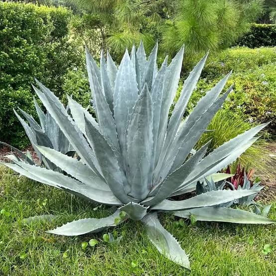
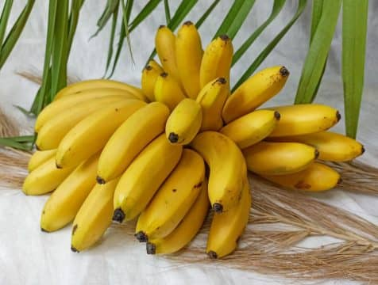

Агава — мешканка пустель

Кліматичні умови:
- Посушливий клімат
- Нестача води
- Високі температури
Банан — культура тропіків

Кліматичні умови:
- Температура 25-30°C
- Висока вологість
- Достатнє освітлення
Порівняльна таблиця адаптацій
| Ознака для порівняння | Агава (пустеля) | Банан (тропіки) |
|---|---|---|
| Стебло | Вкорочене стебло з розеткою листків | Підземне стебло (кореневище) |
| Листки | Великі, м'ясисті, колючі з восковим шаром | Великі, м'які листкові пластинки |
| Запасання води | Розвинена тканина для запасання води | Не потребує запасання води |
| Захист від випаровування | Восковий шар на поверхні листків | Відсутній (не потрібен) |
| Захист від тварин | Колючки на листках | Відсутні захисні утворення |
Спільні ознаки
- Великі листки
- Багаторічні рослини
- Витримують високі температури
Відмінні ознаки
Агава:
- М'ясисті листки
- Восковий захисний шар
- Колючки для захисту
- Економія води
Банан:
- М'які листкові пластинки
- Потреба у вологості
- Чутливість до світла
- Швидке відновлення
Висновок
Натисніть кнопку нижче, щоб побачити висновок про адаптації рослин.